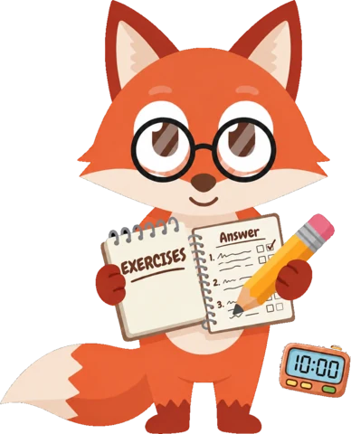
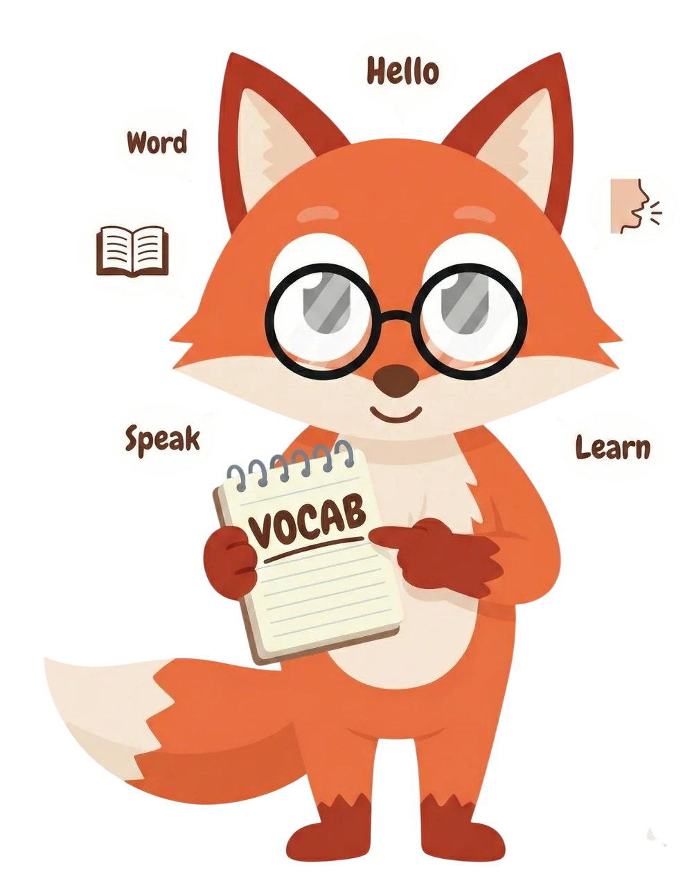

Reading · Partie 5
Question
112
/ 200
The meeting has been
postponed
until next Monday.
A
postpone
B
postponed
C
postponing
D
to postpone
Explication
Après « has been », on utilise le participe passé :
postponed
.
Score par partie
Listening
Reading
Vocabulaire
18 / 20
to postpone
Retourne la carte
Vocabulaire
18 / 20
reporter
The meeting has been postponed.
À revoir
Je savais
Prochaine révision :
dans 4 jours


Rejoins plus de
7 700 étudiants
Commence gratuitement
990prep.com/fr
TOEIC est une marque déposée d’ETS. Non affilié.